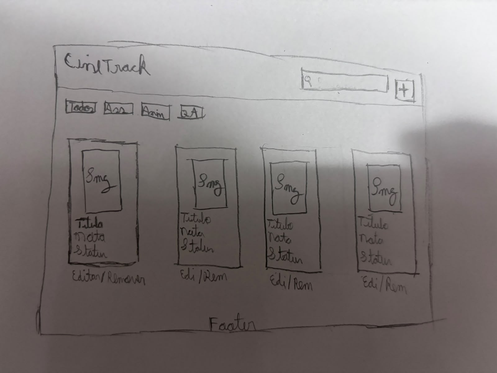

Sobre o CineTrack
Lista dos 6 filmes canônicos do catálogo inicial
| Título |
Ano |
Gênero |
Status |
| A Origem |
2010 |
Ficção científica |
Assistido |
| Parasita |
2019 |
Suspense |
Assistido |
| O Auto da Compadecida |
2000 |
Comédia |
Assistido |
| Duna: Parte Dois |
2024 |
Ficção científica |
Assistindo |
| Interestelar |
2014 |
Ficção científica |
Quero assistir |
| Cidade de Deus |
2002 |
Drama / Crime |
Assistido |

Rascunho conceitual da disposição dos cards, cabeçalho e navegação de filtros na interface.
Como os dados são organizados
- Título: Nome do filme.
- Ano: Ano de lançamento da obra.
- Gênero: Classificação por gênero cinematográfico.
- URL do pôster: Link de imagem para a capa do filme.
- Status: Estado de visualização (Assistido, Assistindo ou Quero assistir).
- Nota: Avaliação pessoal variando de 1 a 5.
- Comentário: Anotações ou resenha sobre o filme.